Pinder abstractions#
PINDER system loader workflow: filters and transforms for Pinder dimer systems.#
The loader workflow is aimed for ML or physics-based method applications.

Filters#
PinderFilterBase#
This is a base class for implementing additional sub-classes with implementations.
Each sub-class must implement a filter method, which accepts a PinderSystem as input, and return a boolean indicating whether the system passes the filter or not.
For example, if we wanted to limit pinder systems with holo monomers that are each at least 10 residues and at most 500 residues, we could construct a FilterByResidueCount like so:
from pinder.core import PinderSystem
from pinder.core.loader import filters
class FilterByResidueCount(filters.PinderFilterBase):
def __init__(self, **kwargs: int | None) -> None:
self.query = filters.ResidueCount(**kwargs)
def filter(self, ps: PinderSystem) -> bool:
holo_structs = ["holo_receptor", "holo_ligand"]
return all(
self.query(getattr(ps, structure))
for structure in holo_structs
)
This filter is now callable and would return True or False depending on the criteria:
>> pinder_id = "1df0__A1_Q07009--1df0__B1_Q64537"
>> ps = PinderSystem(pinder_id)
>> res_filter = FilterByResidueCount(min_residue_count=10, max_residue_count=500)
>> res_filter(ps)
False
PinderFilterSubBase#
This is a base class for implementing additional sub-classes with implementations.
Unlike PinderFilterBase, this class operates on individual monomers of the PinderSystem without filtering the entire set of dimers out of your training examples. These accept a PinderSystem as input, and return a PinderSystem as output.
For example, if we wanted to limit monomers to only those with a minimum number of atom types, we could implement a AtomTypeCount ChainQuery, and then use it in a FilterMonomerAtomTypes filter.
First create a ChainQuery which takes a Structure object as input and returns a boolean value.
class AtomTypeCount(filter.ChainQuery):
def __init__(
self,
min_atom_type: int | None = None,
max_atom_type: int | None = None,
count_hetero: bool = False,
) -> None:
self.min_atom_type = min_atom_type
self.max_atom_type = max_atom_type
self.count_hetero = count_hetero
def check_length(self, chain: Structure) -> int:
if self.count_hetero:
return len(chain.atom_names)
else:
non_het = chain.filter("hetero", [False], copy=True)
return len(non_het.atom_names)
def query(self, chain: Structure) -> bool:
n_at = self.check_length(chain)
if self.min_atom_type is not None:
if n_at < self.min_atom_type:
return False
if self.max_atom_type is not None:
if n_at > self.max_atom_type:
return False
return True
The presence of individual monomer chains after applying a filter is still stored in the individual PinderSystem structure attributes.
If an individual monomer is removed by the filter, the corresponding structure attribute will be set to None, even if it was originally loaded as a Structure object.
Here’s how to create a filter that would only keep monomers with at least 4 atom types (as default).
class FilterMonomerAtomTypes(filters.PinderFilterSubBase):
def __init__(self, min_atom_types: int = 4) -> None:
super().__init__()
self.min_atom_types = min_atom_types
self.atom_type_count = AtomTypeCount(min_atom_type=min_atom_types)
def filter(
self, ps: PinderSystem, update_monomers: bool = True
) -> PinderSystem:
return self.filter_by_chain_query(
ps, self.atom_type_count, update_monomers=update_monomers
)
StructureFilter#
This is a base class for implementing Structure-level filter sub-classes.
Each sub-class must implement a filter method, which accepts a Structure as input, and return a boolean indicating whether the system passes the filter or not.
For example, if we wanted to limit considered dimers to those with at least 50 residues, we could define a MinStructureResidueCount filter like so:
from pinder.core.loader import filters
from pinder.core.loader.structure import Structure
class MinStructureResidueCount(filters.StructureFilter):
def __init__(self, min_residues: int = 50) -> None:
self.min_residues = min_residues
def filter(self, structure: Structure) -> bool:
return len(structure.residues) >= self.min_residues
This filter is now callable and would return True or False depending on the criteria:
>> pinder_id = "1df0__A1_Q07009--1df0__B1_Q64537"
>> ps = PinderSystem(pinder_id)
>> native = ps.native
>> res_filter = MinStructureResidueCount()
>> res_filter(native)
True
Filter implementation progress#
Filter by sequence length
Filter by holo overlap
Number of atom types
Max. RMSD to holo
Backbone completeness
Minimum contact
Elongated chains
Discontinuous chains
Homodimer
Any metadata field
Transforms#
Transforms take a PinderSystem as input, apply structure transformations and return a PinderSystem as output.
The PinderSystem object exposes the set of Structure objects associated with a “system” (entry in the index).
The Structure objects expose a number of base methods which can be used to apply various transforms.
Some examples of transforms derived directly from Structure object:
from pinder.core import PinderSystem
# Simplest interface - get a single pinder system
pinder_id = '1doa__A1_P60953--1doa__B1_P19803'
ps = PinderSystem(pinder_id)
holo_L_calpha = ps.holo_ligand.filter("atom_name", mask=["CA"])
# Can also filter "in place" rather than returning a copy
ps.apo_ligand.filter("atom_name", mask=["CA"], copy=False)
# You can superimpose `Structure` objects as long as they have common atoms:
# Calpha rmsd after superposition is stored in `rms`
R_super, rms = ps.apo_receptor.superimpose(ps.holo_receptor, copy=True)
L_super, rms = ps.apo_ligand.superimpose(ps.holo_ligand, copy=True)
To define a series of transforms in the loader, or implement custom transformation logic, you can create a subclass of the TransformBase parent class. The only requirement is that the subclass implements a transform method which accepts a PinderSystem as an input and returns a transformed PinderSystem as output.
Here’s an example of a custom transform implementation that super-imposes all monomers to a reference monomer.
from pinder.core.index.transforms import TransformBase
class SuperposeToReference(TransformBase):
def __init__(self, reference_type: str = "holo") -> None:
assert reference_type in {"holo", "native"}
self.reference_type = reference_type
def transform(self, ppi: PinderSystem) -> PinderSystem:
assert ppi.holo_L and ppi.holo_R
if self.reference_type == "native":
ppi.holo_receptor = ppi.aligned_holo_R
ppi.holo_ligand = ppi.aligned_holo_L
R_ref = ppi.holo_receptor
L_ref = ppi.holo_ligand
for R_monomer in ["apo_receptor", "pred_receptor"]:
R_struc = getattr(ppi, R_monomer)
if R_struc:
unbound_super, rms_R = R_struc.superimpose(R_ref)
setattr(ppi, R_monomer, unbound_super)
for L_monomer in ["apo_ligand", "pred_ligand"]:
L_struc = getattr(ppi, L_monomer)
if L_struc:
unbound_super, rms_L = L_struc.superimpose(L_ref)
setattr(ppi, L_monomer, unbound_super)
return ppi
Structure object#
# You can add `Structure` objects to create a multimer complex using Structure.__add__
apo_binary = R_super + L_super
holo_binary = ps.holo_receptor + ps.holo_ligand
ps.apo_ligand.resolved_pdb2uniprot
apo_complex.resolved_mapping
ps.apo_ligand.coords[0:10]
ps.apo_ligand.residue_names
ps.apo_ligand.sequence
ps.apo_ligand.chain_sequence
apo_complex.chain_sequence
# The underlying [biotite](https://www.biotite-python.org/) AtomArray object:
ps.apo_ligand.atom_array[0:10]
ps.apo_ligand.atom_array.res_name
ps.apo_ligand.atom_array[apo_L.backbone_mask][0:10]
ps.apo_ligand.atom_array[apo_L.calpha_mask][0:10]
# If the output PDB filepath is omitted, the structure will be written to Structure.filepath, which may overwrite
# In this case, it would be a new file composed of the added complex filepaths if we omit
apo_complex.to_pdb(destination_dir / "apo_complex.pdb")
Writers/Generators#
Writers take Iterator of PinderSystem as input, apply user defined featurization, write as pickled input features or iterator of features.
Pinder loader#
Pinder loader brings together filters, transforms and writers to create an optionally parallel PinderSystem iterator. Takes either split or list of systems as input.
from pinder.core import PinderLoader
from pinder.core.loader import filters
from pinder.core.loader.writer import PinderDefaultWriter
base_filters = [
filters.FilterByMissingHolo(),
filters.FilterSubByContacts(min_contacts=5, radius=10.0, calpha_only=True),
filters.FilterByHoloElongation(max_var_contribution=0.92),
filters.FilterDetachedHolo(radius=12, max_components=2),
]
sub_filters = [
filters.FilterSubByAtomTypes(min_atom_types=4),
filters.FilterByHoloOverlap(min_overlap=5),
filters.FilterByHoloSeqIdentity(min_sequence_identity=0.8),
filters.FilterSubLengths(min_length=0, max_length=1000),
filters.FilterSubRmsds(rmsd_cutoff=7.5),
filters.FilterByElongation(max_var_contribution=0.92),
filters.FilterDetachedSub(radius=12, max_components=2),
]
loader = PinderLoader(
split="train",
base_filters = base_filters,
sub_filters = sub_filters
)
passing_ids = []
for item in loader:
passing_ids.append(item[0].entry.id)
systems_removed_by_filters = set(loader.index.id) - set(passing_ids)
# If you want to explicitly write (potentially transformed) PDB files to a custom location:
loader = PinderLoader(
ids=[pinder_id],
monomer_priority="pred",
base_filters=base_filters,
sub_filters=sub_filters,
writer=PinderDefaultWriter(pinder_temp_dir)
)
loaded = loader[0]
assert loader.writer.output_path.is_dir()
assert len(list(loader.writer.output_path.glob("af_*.pdb"))) > 0
Create train dataloader (torch)#
from pinder.core.loader import filters, transforms
from pinder.core.loader.dataset import collate_batch, get_torch_loader, PinderDataset
from torch.utils.data import DataLoader
base_filters = [
filters.FilterByMissingHolo(),
filters.FilterSubByContacts(min_contacts=5, radius=10.0, calpha_only=True),
filters.FilterDetachedHolo(radius=12, max_components=2),
]
sub_filters = [
filters.FilterSubByAtomTypes(min_atom_types=4),
filters.FilterByHoloOverlap(min_overlap=5),
filters.FilterByHoloSeqIdentity(min_sequence_identity=0.8),
filters.FilterSubRmsds(rmsd_cutoff=7.5),
filters.FilterDetachedSub(radius=12, max_components=2),
]
# We can include Structure-level transforms (and filters) which will operate on the target and/or feature complexes
structure_transforms = [
transforms.SelectAtomTypes(atom_types=["CA", "N", "C", "O"])
]
train_dataset = PinderDataset(
split="train",
# We can leverage holo, apo, pred, random and random_mixed monomer sampling strategies
monomer_priority="random_mixed",
base_filters = base_filters,
sub_filters = sub_filters,
# Apply to the target (ground-truth) complex
structure_transforms_target=structure_transforms,
# Apply to the feature complex
structure_transforms_feature=structure_transforms,
)
batch_size = 2
train_dataloader = get_torch_loader(
train_dataset,
batch_size=batch_size,
shuffle=True,
collate_fn=collate_batch,
num_workers=0,
)
# Get a batch from the dataloader
batch = next(iter(train_dataloader))
Create test dataset (torch-geometric)#
from pinder.core import get_index, PinderSystem
from pinder.core.loader.geodata import PairedPDB, NodeRepresentation
from pinder.core.loader.dataset import get_geo_loader, PPIDataset
from torch_geometric.data import HeteroData
from torch_geometric.loader import DataLoader
nodes = {NodeRepresentation("atom"), NodeRepresentation("residue")}
train_dataset = PPIDataset(
node_types=nodes,
split="train",
monomer1="holo_receptor",
monomer2="holo_ligand",
limit_by=5,
)
assert len(train_dataset) == 5
pindex = get_index()
raw_ids = set(train_dataset.raw_file_names)
processed_ids = {f.stem for f in train_dataset.processed_file_names}
data_item = train_dataset[0]
assert isinstance(data_item, HeteroData)
data_item = train_dataset.get_filename("117e__A1_P00817--117e__B1_P00817")
assert data_item.num_nodes == 5031
assert data_item.num_edges == 0
assert isinstance(data_item.num_node_features, dict)
expected_num_feats = {
'ligand_residue': 0,
'receptor_residue': 0,
'ligand_atom': 12,
'receptor_atom': 12,
'pdb': 0,
}
for k, v in expected_num_feats.items():
assert data_item.num_node_features[k] == v
expected_node_types = [
'ligand_residue', 'receptor_residue', 'ligand_atom', 'receptor_atom', 'pdb'
]
assert data_item.node_types == expected_node_types
train_dataset.print_summary()
loader = get_geo_loader(train_dataset)
assert isinstance(loader, DataLoader)
assert hasattr(loader, "dataset")
ds = loader.dataset
assert len(ds) == 5